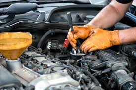

Servicios para tu Auto
Mantenimiento de motor
Cambio de aceite
Ajuste completo de motor sin importar la marca
Revisión de frenos y ajuste para mayor seguridad
Limpieza de inyectores para mejorar el rendimiento del motor
Balanceo y alineación de llantas para una conducción más segura
Cambio de baterías con garantía
Diagnóstico computarizado para identificar problemas en el vehículo
Ofrecemos una variedad de servicios para cuidar y mantener tu vehículo en perfectas condiciones. Nuestro equipo está altamente capacitado para garantizar la mejor atención.